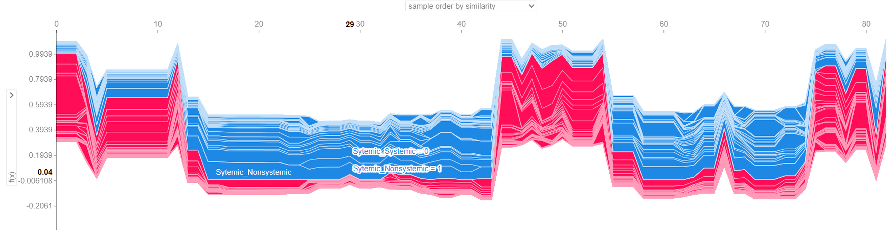

Predictive machine learning models assess bacterial virulence based on ecological and transmission factors, with SHAP and LIME plots used to interpret feature impact.

This project aimed to predict the virulence of bacterial pathogens using machine learning, focusing on ecological and transmission-based features instead of traditional taxonomy.
The model leveraged factors like tissue tropism, mode of transmission, and transmissibility to determine severity. A dataset of 76 pathogens from 36 bacterial families was analyzed using both binary and multi-level severity scales.
Due to the limited sample size, data upsampling techniques were used to ensure statistical robustness. Then, four machine learning models—SVM, Random Forest, Linear Regression, and Gradient Boosting—were trained and tested.
Among these,
Random Forest stood out,
with impressive performance:
Precision: 0.93,
Recall: 0.96,
F1-score: 0.94,
AUC: 0.984.
For transparency and interpretability, tools like SHAP and LIME were used, enabling visual analysis of feature impact. The models identified systemic infection traits and indirect transmission modes as strong predictors of virulence.
This project proved that virulence prediction is a multifactorial challenge, not solely determined by taxonomy. The insights have strong potential for application in diagnostics, surveillance, and clinical decision-making.